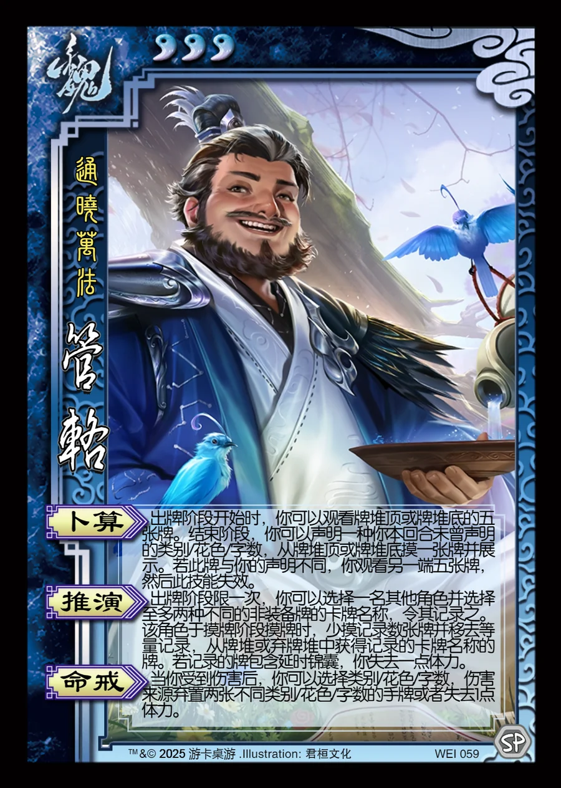

点击卡面查看大图
魏
管辂
♥3通晓万法
卜算
出牌阶段开始时，你可以观看牌堆顶或牌堆底的五张牌。结束阶段，你可以声明一种你本回合未曾声明的类别/花色/字数，从牌堆顶或牌堆底摸一张牌并展示。若此牌与你的声明不同，你观看另一端五张牌，然后此技能失效。
推演
出牌阶段限一次，你可以选择一名其他角色并选择至多两种不同的非装备牌的卡牌名称，令其记录之。该角色于摸牌阶段摸牌时，少摸记录数张牌并移去等量记录，从牌堆或弃牌堆中获得记录的卡牌名称的牌。若记录的牌包含延时锦囊，你失去一点体力。
命戒
当你受到伤害后，你可以选择类别/花色/字数，伤害来源弃置两张不同类别/花色/字数的手牌或者失去1点体力。